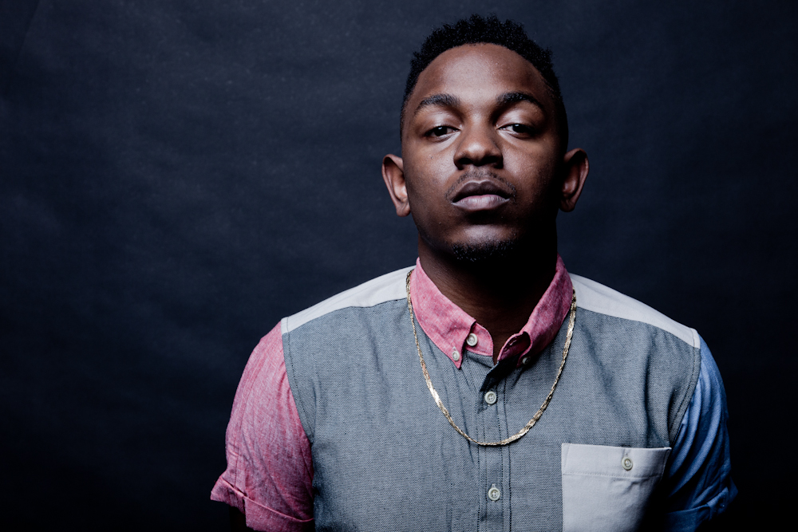

About
Kendrick Lamar is an award-winning rapper and songwriter best known for his innovative take on life in Southern California as well as for his affiliation with rap star and super-producer Dr. Dre.
Synopsis
Kendrick Lamar Duckworth, who performs as Kendrick Lamar, was born in Compton, California, on June 17, 1987. After writing stories as a child, he put to music some lyrics about the rough Compton streets he grew up on. He rapped under the name K-Dot, releasing a series of increasingly popular mix tapes, which brought him to the attention of hip-hop super-producer Dr. Dre. Lamar's debut major-label recording, good kid, m.A.A.d City, was released to great acclaim and impressive sales for an up-and-coming recording artist. He continued to receive an array of accolades for his 2015 Grammy-winning album To Pimp a Butterfly.
Background and Early Life
Kendrick Lamar Duckworth (who dropped his last name to perform as Kendrick Lamar) was born in Compton, California, on June 17, 1987. His parents had moved to Compton from Chicago to escape the city's gang culture, although Lamar's father had been associated with the notorious Gangster Disciples gang. As the 1980s crack trade and West Coast gang presence increased, Lamar grew up around precarious street activity, but he seemed more influenced than harmed by it. He was a good student who enjoyed writing, first stories and poems, and then lyrics.
Lamar's family was directly touched by the violence of the streets, yet he remained thoughtful and soft-spoken, ever the keen observer, even as a child. He adopted the moniker K-Dot and began performing his lyrics as a rapper. At age 16, in 2003, he circulated a mix tape called Youngest Head Nigga in Charge, which drew a lot of interest in his native Southern California and beyond.
The project was enough to get Lamar a record deal with Top Dawg Entertainment, a respected California independent label and feeder to major labels. He went on to release two other acclaimed mix tapes, Training Day (2005) and C4 (2009), steadily working with other up-and-coming West Coast rappers like Jay Rock, Ab-Soul and Schoolboy Q. Lamar and these other performers eventually formed their own rap collective, Black Hippy.
Meeting Dr. Dre
In 2010 Lamar dropped the K-Dot tag and began using his own name. He also put out a fourth mix tape, Overly Dedicated. That same year, Lamar released his first full-length independent album under Top Dawg Entertainment. Titled Section.80, it was released exclusively on iTunes.
Lamar continued writing music and lyrics, and continued to tour and collaborate with more popular recording artists such as Young Jeezy, The Game, Talib Kweli, Busta Rhymes and Lil Wayne. Dr. Dre, one of hip-hop's most respected and influential producers, took the young artist under his wing, becoming his mentor in both music and business.
As the buzz on Lamar continued to build, Dr. Dre signed him to his independent record label, Aftermath Entertainment, alongside more established rap stars Eminem and 50 Cent (in a joint venture with Top Dawg). Aftermath was distributed by major label Interscope (Universal Music), which would have the marketing, sales and distribution muscle to take Lamar's career to the next level. Now the quiet, observant kid who made good grades in school was poised to become rap's newest superstar.
'good kid, m.A.A.d city'
In October 2012, Lamar's highly anticipated major-label debut album, good kid, m.A.A.d city, was released to wide acclaim. (Lady Gaga recorded a song with Lamar for the album, but it ultimately was not included due to "creative differences.") Hit singles like "Swimming Pools (Drank)" and "Poetic Justice," and the rapper's emergence as a talent to watch, cleared the way for him to make major American television appearances while promoting the album, including Saturday Night Live, Late Night With David Letterman and Late Night With Jimmy Fallon. This solidified his fan base, not only among hard-core hip-hop heads, but also among college students and fans of alternative rock.
The Revival of Hip-Hop
Lamar's appeal to the masses didn't stop there. The thought-provoking lyrics on his debut album caught the attention of hip-hop critics as well, with MTV naming him the "Hottest MC" of 2012—putting him in the company of other rappers who have earned the title, including Lil Wayne, Jay-Z and Kanye West.
Additionally, critics took note of Lamar's verse on the song "Control," by rapper Big Sean. Although the track was penned by another artist, Lamar's verse drew attention because of his challenge to several other popular names in the hip-hop world, including Drake, J. Cole and Big Sean himself. The bold claims in the controversial verse rapped by Lamar brought about a vibe that was reminiscent of the classic hip-hop era, drawing appreciation from critics, rappers and fans alike.
Lamar remains popular for his sharp observations of street culture, often examining the psychology of the victims of crimes. "That's the most interesting story to me," he told the British newspaper The Guardian. "At first, I was scared to show fear because you can never be sure how people will perceive you. But I dared myself to do that, to stand out."